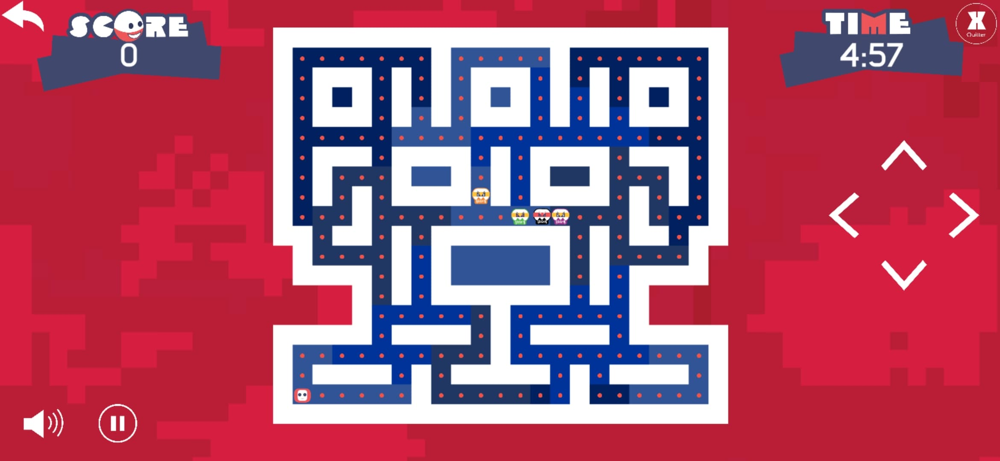
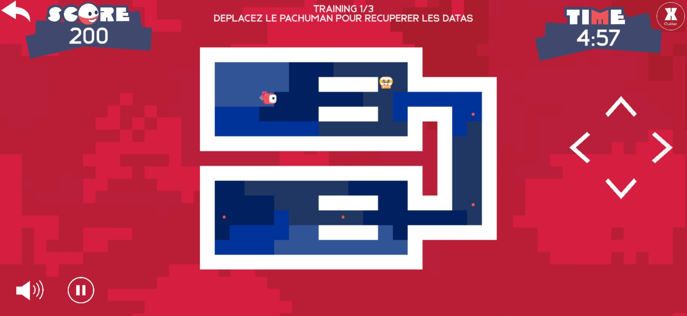

Pac Human est un jeu qui est né de la collaboration entre Ludus Académie - Strasbourg et Athéo Ingénierie. Ce jeu grandement inspiré de Pac-Man a été offert aux clients d'Athéo, avec l'ambition de créer un tournoi pour le plus haut score, donnant sur des cadeaux pour les premiers. Ce jeu a été développé par une équipe composée de Bastien Prob, Anthony Lamour, Nicolas Lehmann et Nicolas Valentin, ainsi qu'avec l'entreprise cliente, soit Isabelle Debreuille, Flora Nicolas, Damien Ebel et Dorian Nicoletti.
| Mes contributions |
|
|
|
|  |  |
Contactez moi à l'adresse mail suivante : cdrcmag@outlook.fr